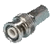
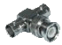
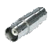
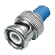

Коаксиалният кабел би трябвало да е познат на всички, притежаващи кабелна телевизия. Сърцевината му е изградена от мед, като може да бъде или многожичен, или солиден проводник. Сигналът се предава по медта, която е увита в изолатор. Около изолатора е увит друг проводник - метално фолио или оплет-ка. Този външен проводник е разположен по цялата дължина на кабела. От тук идва и името коаксиален (coaxial), защото по цялата дължина вървят съвместно (со) два физически канала - единият за пренос на сигналите, а другият за земя -при това по една и съща ос (axis). Външният проводник играе ролята на екран срещу различните електромагнитни смущения. Всички тези компоненти накрая са увити във външна защитна обвивка от пластмаса, гума или негорим материал — например тефлон.
Поради дебелата изолация и доброто
екраниране, коаксиалният кабел е по-неподатлив на външни електромагнитни
смущения, отколкото усуканата двойка.
Съществуват хиляди различни типове и
категории коаксиални кабели, както може да се види от каталозите на всеки
производител. Много от тях се използват от мрежи със специално предназначение,
като например за свързване на научни инструменти или друга специализирана
апаратура. В следващата таблица са посочени видовете коаксиални кабели,
които се използват в компютърни мрежи:
| Обозначение | Общо наименование | Описание | Предназначение |
| RG-8, RG-11 | Thicknet | Дебел коаксиален кабел с диаметър половин инч | 10Base5 |
| RG-58 A/U | Thinnet | Тънък коаксиален кабел с диаметър четвърт инч | 10Base2 |
| RG-58 C/U | Thinnet (военна спец.) | Тънък коаксиален кабел с диаметър четвърт инч | 10Base2 (военни цели) |
| RG-62 | ARCnet | Тънък коаксиален кабел | ARCnet мрежи |
BNC конектори.
BNC В 10Base2 мрежите (т.е. тези с тънък коаксиален
кабел) се използват BNC конектори за връзка между мрежовата карта и кабела.
BNC конекторът представлява малко цилиндрично устройство с игла по средата,
която се свързва с проводника в кабела. Той се захваща чрез завъртане
на външен пръстен. BNC устройствата включват:
BNC T- конектор -
При този конектор стеблото на Т се свързва към мрежовата карта, а всеки
от останалите два края се свързва към кабела. Ако към Т-конектора се свързва
само един кабел, от другата му страна се поставя терминатор.
BNC I- цилиндричен конектор - Този конектор
представлява прав цилиндър, към който се свързва краят на кабела, така
че можете да съедините две парчета кабел, за да увеличите общата дължина.
Използването на цилиндрични конектори трябва да е минимално, защото във
всяка точка на свързване може да възниква загуба на сигнала.
BNC терминатор - BNC терминаторът представлява
50-омово устройство за терминиране, което се инсталира във всеки от краищата
на коаксиалната шина. Терминаторът предотвратява отразяването на сигнала
при достигането му до края на кабела, което иначе предизвиква смущение.
И двата края на кабела трябва да са терминирани, а единият от тях е необходимо
да е заземен с помощта на проводник към нулев електрически потенциал.



